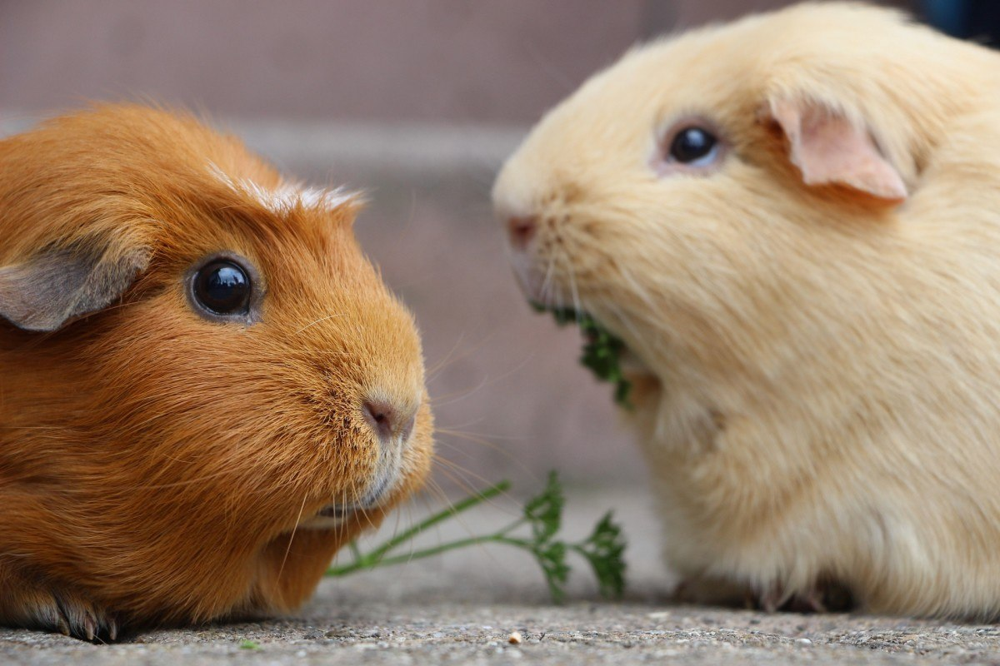

меня зовут вика, мне 13 лет, люблю гулять, но чаще сижу дома, но если выхожу, то до поздна гуляю, как то раз на одной из прогулки мы шли с друзьями после того как навестили воспитателя пошли во вкусно и точка, поели, потом пошли на район, в магазин магнит, после магнита, \ пошли в магнит косметик не по далёку от магнита, купили
У меня очень много любимых увлечений. Я люблю читать, я люблю кататься на велосипеде, и мне очень нравится история. Но мое самое главное хобби – это рисование. Я начал рисовать, когда был еще маленьким. Мама с папой очень часто дарили мне фломастеры самых разных цветов, цветные карандаши и красивую, белоснежную бумагу для рисования. Мне нравилось изображать на чистом листе что-нибудь красивое, растения, животных, иногда людей. Поэтому я нередко сам делал открытки для мамы и папы. Однако, первые мои рисунки были не самыми лучшими. Кое-что получалось криво, кое-что вообще не получалось. Но я всегда продолжал рисовать. Теперь, мне кажется, я рисую очень хорошо. Мои работы висят на стенах в моей комнате. Я часто отправляю свои творения на конкурсы детских рисунков и часто получаю дипломы и призы. Более того, я хожу в художественную школу. Мне там очень нравится. В художественной школе царит настоящая атмосфера мастерства и творчества. Мы обычно рисуем натюрморты, иногда людей. Летом мы ходим на пленер и рисуем природу, цветы, леса, деревья, дома. Сейчас мои рисунки довольно-таки хорошие. Но когда-нибудь я хочу научиться рисовать как великие русские художники И. Шишкин, И. Айвазовский и К. Брюллов! Я уверен, что смогу рисовать еще лучше, если буду стараться.
